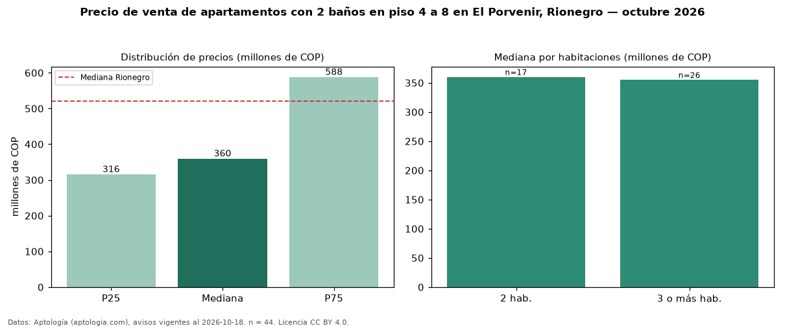

Precio de venta de apartamentos con 2 baños en piso 4 a 8 en El Porvenir, Rionegro — octubre 2026
En El Porvenir, Rionegro, la mediana de precio de venta de apartamentos con 2 baños en piso 4 a 8 es COP 360 millones, según 44 avisos vigentes. Frente a la mediana de los apartamentos con 2 baños en venta de El Porvenir (COP 427 millones, n = 354), queda 16 % por debajo; este segmento reúne el 12 % de esos avisos. Por metro cuadrado, la mediana es COP 6,77 millones/m² (n = 44), 5 % por debajo de los apartamentos con 2 baños en venta de El Porvenir (COP 7,15 millones/m²). El área mediana anunciada es 58 m². El segmento con más oferta es el de 3 o más habitaciones (26 avisos, mediana COP 355 millones); pasar de 2 habitaciones a 3 o más habitaciones cambia la mediana −1 %. La administración mediana declarada es COP 240.000 al mes (n = 22). La mitad central de los avisos va de COP 316 millones a COP 588 millones (razón 1,9), una dispersión moderada. El estrato más frecuente es 4 (52 % de los avisos con estrato). Datos: Aptología (aptologia.com), CC BY 4.0 — https://www.aptologia.com/venta/rionegro/el-porvenir. Archivos: PDF, CSV con las cifras y gráfica PNG.

| Avisos únicos | 44 |
|---|---|
| Percentil 25 | COP 316.000.000 |
| Mediana | COP 360.000.000 |
| Percentil 75 | COP 588.250.000 |
| Mediana por m² | COP 6.767.173 |
Fuente: avisos vigentes de portales inmobiliarios recopilados por Aptología, deduplicados (mínimo 30 avisos únicos por celda). Precios pedidos, no cerrados. Fecha: 2026-10-18.